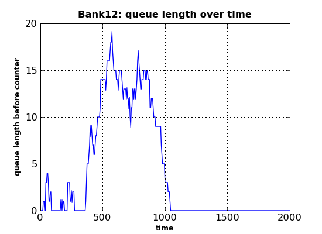
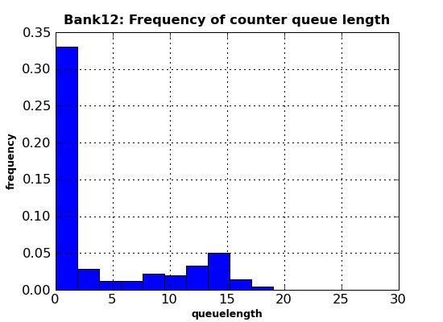

Publication-quality plot production with matplotlib¶
This document deals with producing production-quality plots from SimPy simulation output using the matplotlib library. matplotlib is known to work on Linux, Unix, MS Windows and OS X platforms. This library is not part of the SimPy distribution and has to be downloaded and installed separately.
Simulation programs normally produce large quantities of output which needs to be visualized, e.g. by plotting. These plots can help with aggregating data, e.g. for detecting trends over time, frequency distributions or determining the warm-up period of a simulation model experiment.
SimPy’s SimPlot plotting package is an easy to use, out-of-the-box capability which can produce a full range of plot graphs on the screen and in PostScript format. After installing SimPy, it can be used without installing any other software. It is tightly integrated with SimPy, e.g. its Monitor data collection class.
The SimPlot library is not intended to produce publication-quality plots. If you want to publish your plots in a report or on the web, consider using an external plotting library which can be called rom Python.
About matplotlib¶
A very popular plotting library for Python is matplotlib. Its capabilities far exceed those of SimPy’s SimPlot. This is how matplotlib is described on its home page:
“matplotlib is a python 2D plotting library which produces publication quality figures in a variety of hardcopy formats and interactive environments across platforms. matplotlib can be used in python scripts, the python and ipython shell (a la matlab or mathematica), web application servers, and six graphical user interface toolkits.”
The matplotlib screenshots (with Python code) at http://matplotlib.sourceforge.net/users/screenshots.html show the great range of quality displays the library can produce with little coding. For the investment in time in downloading, installing and learning matplotlib, the SimPy user is rewarded with a powerful plotting capability.
Downloading matplotlib¶
You can download matplotlib from https://sourceforge.net/projects/matplotlib. Extensive installation instructions are provided at http://matplotlib.sourceforge.net/users/installing.html.
matplotlib input data¶
matplotlib takes separate sequences (lists, tuples, arrays) for x- and y-values. SimPlot, on the other hand, plots Monitor instances, i.e., lists of [x,y] lists.
This difference in data structures is easy to overcome in SimPy by using the
Monitor functions yseries (returning the list of y-data) and tseries
(returning the list of time- or x-data).
An example from the Bank Tutorial¶
As an example of how to use matplotlib with SimPy, a modified version of bank12.py from the Bank Tutorial is used here. It produces a line plot of the counter’s queue length and a histogram of the customer wait times:
1#! /usr/local/bin/python
2""" Based on bank12.py in Bank Tutorial.
3 This program uses matplotlib. It produces two plots:
4 - Queue length over time
5 - Histogram of queue length
6"""
7from SimPy.Simulation import *
8import pylab as pyl
9from random import Random
10## Model components
11class Source(Process):
12 """ Source generates customers randomly"""
13 def __init__(self,seed=333):
14 Process.__init__(self)
15 self.SEED = seed
16 def generate(self,number,interval):
17 rv = Random(self.SEED)
18 for i in range(number):
19 c = Customer(name = "Customer%02d"%(i,))
20 activate(c,c.visit(timeInBank=12.0))
21 t = rv.expovariate(1.0/interval)
22 yield hold,self,t
23class Customer(Process):
24 """ Customer arrives, is served and leaves """
25 def __init__(self,name):
26 Process.__init__(self)
27 self.name = name
28 def visit(self,timeInBank=0):
29 arrive=now()
30 yield request,self,counter
31 wait=now()-arrive
32 wate.observe(y=wait)
33 tib = counterRV.expovariate(1.0/timeInBank)
34 yield hold,self,tib
35 yield release,self,counter
36class Observer(Process):
37 def __init__(self):
38 Process.__init__(self)
39 def observe(self):
40 while True:
41 yield hold,self,5
42 qu.observe(y=len(counter.waitQ))
43## Model
44def model(counterseed=3939393):
45 global counter,counterRV,waitMonitor
46 counter = Resource(name="Clerk",capacity = 1)
47 counterRV = Random(counterseed)
48 waitMonitor = Monitor()
49 initialize()
50 sourceseed=1133
51 source = Source(seed = sourceseed)
52 activate(source,source.generate(100,10.0))
53 ob=Observer()
54 activate(ob,ob.observe())
55 simulate(until=2000.0)
56qu=Monitor(name="Queue length")
57wate=Monitor(name="Wait time")
58## Experiment data
59sourceSeed=333
60## Experiment
61model()
62## Output
63pyl.figure(figsize=(5.5,4))
64pyl.plot(qu.tseries(),qu.yseries())
65pyl.title("Bank12: queue length over time",
66 fontsize=12,fontweight="bold")
67pyl.xlabel("time",fontsize=9,fontweight="bold")
68pyl.ylabel("queue length before counter",fontsize=9,fontweight="bold")
69pyl.grid(True)
70pyl.savefig(r".\bank12.png")
71
72pyl.clf()
73n, bins, patches = pyl.hist(qu.yseries(), 10, normed=True)
74pyl.title("Bank12: Frequency of counter queue length",
75 fontsize=12,fontweight="bold")
76pyl.xlabel("queuelength",fontsize=9,fontweight="bold")
77pyl.ylabel("frequency",fontsize=9,fontweight="bold")
78pyl.grid(True)
79pyl.xlim(0,30)
80pyl.savefig(r".\bank12histo.png")
Here is the explanation of this program:
Line number and explanation
- 01
Imports the matplotlib pylab module (this import form is needed to avoid namespace clashes with SimPy).
- 63
Sets the size of the figures following to a width of 5.5 and a height of 4 inches.
- 64
Plots the series of queue-length values (qu.yseries()) over their observation times series (qu.tseries()).
- 65
Sets the figure title, its font size, and its font weight.
- 67
Sets the x-axis label, its font size, and its font weight.
- 68
Sets the y-axis label, its font size, and its font weight.
- 69
Gives the graph a grid.
- 70
Saves the plot under the given name.
72 Clears the current figure (e.g., resets the axes values from the previous plot).
- 73
Makes a histogram of the queue-length series (qu.series()) with 10 bins. The normed parameter makes the frequency counts relative to 1.
- 74
Sets the title etc.
- 76
Sets the x-axis label etc.
- 77
Sets the y-axis label etc.
- 78
Gives the graph a grid.
- 79
Limits the x-axis to the range[0..30].
- 80
Saves the plot under the given name.
Running the program above results in two PNG files. The first (bank12.png)
shows the queue length over time:

The second output file (bank12histo.png) is a histogram of the customer
queue length at the counter:

Conclusion¶
The small example above already shows the power, flexibility and quality of the graphics capabilities provided by matplotlib. Almost anything (fonts, graph sizes, line types, number of series in one plot, number of subplots in a plot, …) is under user control by setting parameters or calling functions. Admittedly, it initially takes a lot of reading in the extensive documentation and some experimentation, but the results are definitely worth the effort!